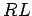

Next:
Introduction
Electromagnetism and Optics
An introductory course
Richard Fitzpatrick
Professor of Physics
The University of Texas at Austin
Introduction
Vectors
Vector Algebra
Vector Area
The Scalar Product
The Vector Product
Vector Calculus
Line Integrals
Surface Integrals
Volume Integrals
Electricity
Historical Introduction
Conductors and Insulators
Electrometers and Electroscopes
Induced Electric Charge
Coulomb's Law
Electric Fields
Worked Examples
Example 3.1: Electrostatic force between three colinear point charges
Example 3.2: Electrostatic force between three non-colinear point charges
Example 3.3: Electric field generated by two point charges
Gauss' Law
Electric Field-Lines
Gauss' Law
Electric Field of a Spherical Conducting Shell
Electric Field of a Uniformly Charged Wire
Electric Field of a Uniformly Charged Plane
Charged Conductors
Worked Examples
Example 4.1: Electric field of a uniformly charged sphere
Electric Potential
Electric Potential Energy
Electric Potential
Electric Potential and Electric Field
Electric Potential of a Point Charge
Worked Examples
Example 5.1: Charge in a uniform electric field
Example 5.2: Motion of an electron in an electric field
Example 5.3: Electric potential due to point charges
Example 5.4: Electric potential due to point charges
Capacitance
Charge Storage
Breakdown
Capacitance
Dielectrics
Capacitors in Series and in Parallel
Energy Stored by Capacitors
Worked Examples
Example 6.1: Parallel plate capacitor
Example 6.2: Dielectric filled capacitor
Example 6.3: Equivalent capacitance
Example 6.4: Energy stored in a capacitor
Electric Current
Electric Circuits
Ohm's Law
Resistance and Resistivity
Emf and Internal Resistance
Resistors in Series and in Parallel
Kirchhoff's Rules
Capacitors in DC Circuits
Energy in DC Circuits
Power and Internal Resistance
Worked Examples
Example 7.1: Ohm's law
Example 7.2: Equivalent resistance
Example 7.3: Kirchhoff's rules
Example 7.4: Energy in DC circuits
Magnetism
Historical Introduction
Ampère's Experiments
Ampère's Law
The Lorentz Force
Charged Particle in a Magnetic Field
The Hall Effect
Ampère's Circuital Law
Magnetic Field of a Solenoid
Origin of Permanent Magnetism
Gauss' Law for Magnetic Fields
Galvanometers
Worked Examples
Example 8.1: Earth's magnetic field
Example 8.2: Charged particle in magnetic field
Example 8.3: Ampère's circuital law
Magnetic Induction
Faraday's Law
Lenz's Law
Magnetic Induction
Motional Emf
Eddy Currents
The Alternating Current Generator
The Direct Current Generator
The Alternating Current Motor
The Direct Current Motor
Worked Examples
Example 9.1: Faraday's law
Worked Example 2: Lenz's law
Worked Example 3: Motional emf
Worked Example 4: AC generators
Worked Example 5: AC motors
Inductance
Mutual Inductance
Self Inductance
Energy Stored in an Inductor
The  Circuit
The Circuit
Transformers
Impedance Matching
Worked Examples
Example 10.1: Mutual induction
Example 10.2: Energy density of electric and magnetic fields
Example 10.3: The RL circuit
Example 10.4: The RC circuit
Example 10.5: The step-up transformer
Example 10.6: Impedance matching
Electromagnetic Waves
Maxwell's Equations
Electromagnetic Waves
Effect of Dielectric Materials
Energy in Electromagnetic Waves
Worked Examples
Example 11.1: Electromagnetic waves
Example 11.2: Intensity of electromagnetic radiation
Geometric Optics
Introduction
History of Geometric Optics
Law of Geometric Propagation
Law of Reflection
Law of Refraction
Total Internal Reflection
Dispersion
Rainbows
Worked Examples
Example 12.1: The corner-cube reflector
Example 12,2: Refraction
Paraxial Optics
Spherical Mirrors
Image Formation by Concave Mirrors
Image Formation by Convex Mirrors
Image Formation by Plane Mirrors
Thin Lenses
Image Formation by Thin Lenses
Chromatic aberration
Worked Examples
Example 13.1: Concave mirrors
Example 13.2: Convex mirrors
Example 13.3: Converging lenses
Example 13.4: Diverging lenses
Wave Optics
Introduction
Huygens' principle
Young's Double-Slit Experiment
Interference in Thin Films
Worked Examples
Example 14.1: Double slit experiment
Example 14.2: Interference in thin films
About this document ...
Richard Fitzpatrick 2007-07-14